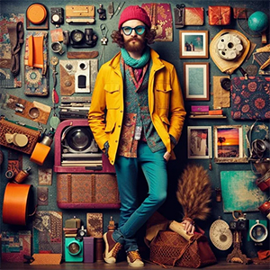

Hipster Fashion Trends
Hipster fashion has always been about blending vintage influences with a contemporary twist. The hipster wardrobe is defined by a casual yet purposeful approach to dressing, often incorporating retro styles with modern sensibilities. Unique clothing choices help hipsters stand apart from mainstream trends, while also showcasing individuality and creativity.

Hipster Clothing
A key element in hipster fashion is the use of thrifted or vintage items, mixed with streetwear and designer pieces. This combination not only reflects a desire to be eco-conscious through sustainable fashion, but also highlights the hipster's attention to craftsmanship, authenticity, and style.
Hipster Tops
Hipsters often embrace vintage-inspired and casual tops. Common trends include:
- Flannel Shirts: Often worn unbuttoned over T-shirts or sweaters.
- Graphic Tees: Featuring obscure bands or retro designs.
- Denim Jackets: A timeless, rugged outerwear piece.
Hipster Bottoms
Popular choices for hipster bottoms emphasize comfort, a vintage look, and individuality:
- Skinny Jeans: Often in dark or distressed shades.
- Chinos: Typically in neutral tones like beige, navy, or olive.
- High-Waisted Shorts: Especially popular in warmer seasons.
Hipster Accessories
Hipster Headwear
Hipsters use accessories to complete their look, with headwear being a key element:
- Beanies: A slouchy, casual look popular year-round.
- Fedoras: For a more polished vintage-inspired touch.
- Snapback Caps: Adding a modern, streetwear vibe.